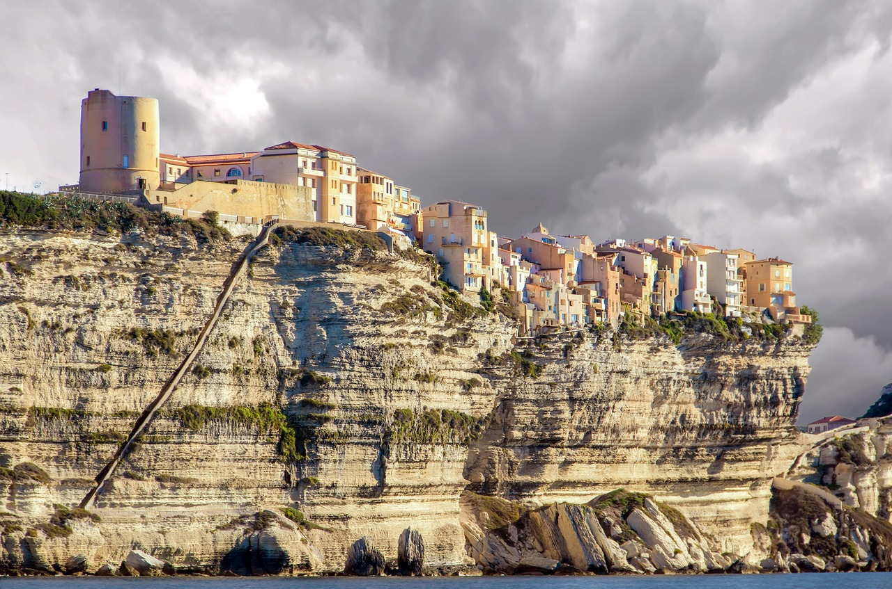

Korsyka to urokliwa wyspa położona na Morzu Śródziemnym, będąca terytorium francuskim. Jest znana z malowniczych plaż, skalistych wybrzeży, turkusowych wód i bujnej przyrody. Wyspa oferuje różnorodne atrakcje, takie jak wspinaczka górska, trekkingi, nurkowanie i żeglarstwo. Korsyka słynie również z bogatej historii i kultury, a w jej wnętrzu znajdują się urokliwe wioski górskie, które zachwycają tradycyjną architekturą i lokalną atmosferą. To idealne miejsce dla miłośników przyrody i osób poszukujących spokoju i relaksu w pięknym środowisku.

Tromsø to urocze miasto położone na północnym wybrzeżu Norwegii, powyżej podbiegunowego koła podbiegunowego. Jest popularnym miejscem dla obserwatorów zorzy polarnej, ponieważ znajduje się w tzw. "Pasie Zorzy Polarnej". Oprócz tego Tromsø oferuje wiele innych atrakcji, takich jak wycieczki łodzią po fiordach, safari na reniferach, spacery po urokliwych uliczkach miasta z tradycyjnymi, kolorowymi domkami, a także wizyty w muzeach i galeriach. Miasto jest również znane jako brama do Arktyki i jest popularnym miejscem wyjściowym dla ekspedycji polarnej. Tromsø to magiczne miejsce, które łączy piękno przyrody arktycznej z atmosferą tętniącego życiem miasta.